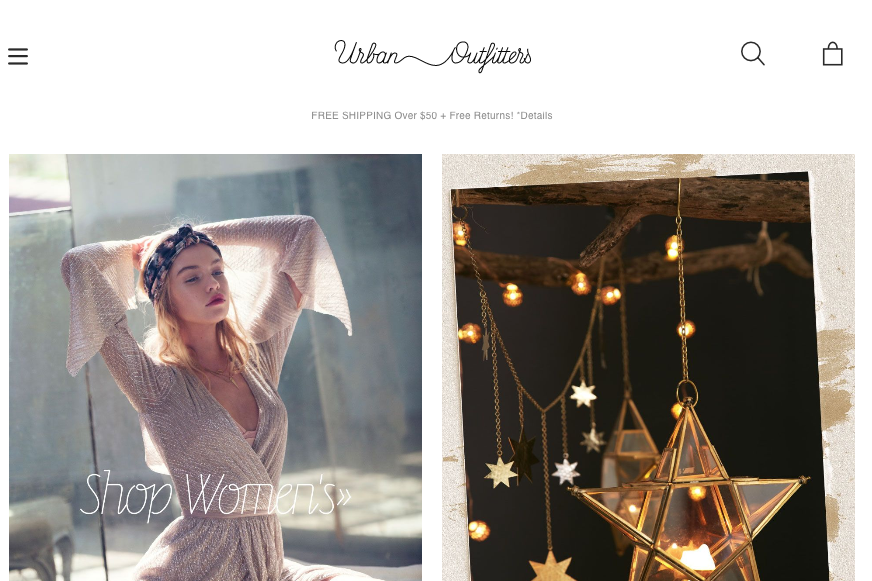

Though I go on this site often i never really focused on the websites layout and their choice on navigational styles. Their website is simple but at the same time has a very elegant feel to it, It is easy to navigate and on the homepage they have pictures of what is featured on the website which I think is a good design choice. By having images on the homepage it gives you insight on what the website has to offer and it keeps the viewer engaged. Aside from the fact that the home page has images it also has different categories along the top to help the viewer realize its a website you can by things by the little shopping bag to the top right corner.
Also this site has majority of categories to the left side so you can see more content on the page and to not overwhelm the user. The design aspect and typography fo r this website is both creative and matches the theme of the site. This is a great way to grasp the viewers attention and make them interested to keep using the site. This site overall is designed very nicely and is very organized making the experience on the sight both pleasing and stress free.
